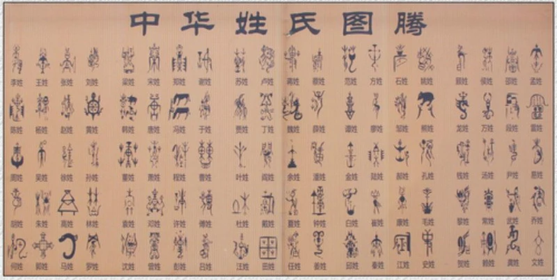
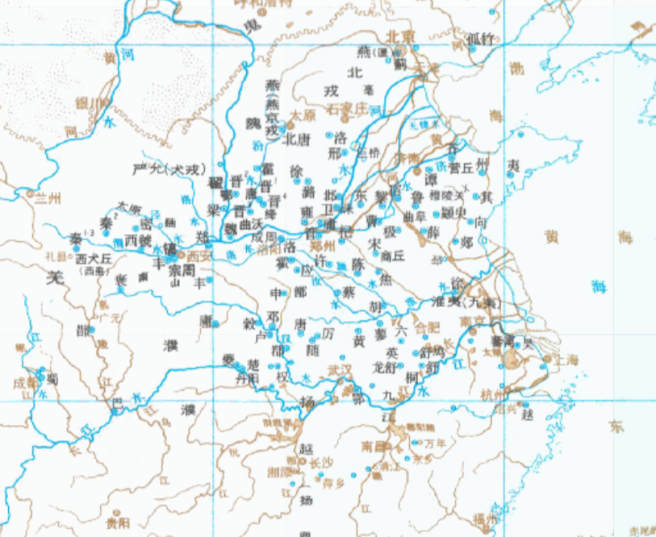

《百家姓》虽称为”百家姓“，但并非只有一百个姓。《百家姓》文中的姓氏次序也不是按姓氏人口实际排列。
根据渊源出处的不同或其特征， 《百家姓》中所列姓氏可以分为16种。
第一种，以祖先的图腾崇拜物为姓氏。

有些是由图腾演变而来的，如：熊、马、牛、羊、龙、凤、山、水、花、叶等。由于年代久远，史前部分消失后难以考知，到底哪些姓氏源于图腾崇拜，
已不得而知。黄帝与蚩尤大战于涿鹿之野，曾率领“熊、黑、貅、貔、虎”等。
这些“ 熊、罴、貅、貔、虎”等可能就是图腾氏族的名号。
但这些氏族的名号究竟有哪些传递下来，成为其后裔的姓氏，也已难寻蛛丝。
第二种，以祖先名字中的字为姓氏。
如年，是在春秋时，周灵王有子叫“王子年夫”，年夫的后人便以其名中的“年”字为姓氏。 类似的还包括牧、终、常、孔、廉、乐、皮、高等姓氏。
第三种，以封地名和国名为姓氏。
如宋，是出自子姓，据《唐书-宰相世系表》所载， 公元前十世纪周公平定了武康叛乱之后，微子启受封於宋国，
其子孙以原国名“宋“为氏。类似姓氏还有赵、黄、吴、郑、陈、卫、蒋、沈、韩、秦、许、吕、戚、谢、邹、柏
、章、苏、潘、葛、范、彭、鲁、韦、苗、任、柳等。

第四种，以职业或官职为姓氏。
如司徒，是上古时代官名，传说尧、舜时设立，一直延续到秦汉，
任此官职的后代便以官职名称为姓。另外还包括司空、司马等也属于这种情况。
第五种，以山名、河名为姓氏。
如乔姓，出于有熊氏。黄帝死后，葬于桥山。
黄帝的子孙中守陵的人就以陵山之名“桥”为姓氏，后人去木为“乔”。
还有姜姓，出于神农氏，炎帝神农氏居住在姜水，其后代有人以河名为姓。
第六种，以住地的方位为姓氏。
如东郭，郭是指古代时城的外围加筑的一道城墙，
东郭，就是外城的东墙附近。齐桓公的后裔中有住在临淄城东外一带的，被称为东郭大夫，
其后人便以东郭为姓；类似还有东门，鲁庄公有后代叫公子遂，字襄仲，家住曲阜城东门旁，
人称东门襄仲，其后人便以东门为姓；另外还有西门，春秋时，齐国和郑国都有公族大夫住在都城的西门附近，人称西门氏，其后人便以西门为姓氏。
第七种，以部落的名称为姓氏。
如复姓呼延、慕容、宇文、尉迟、万俟等姓氏都属于这种情况。
第八种．以出生时的异象为姓氏。
如武姓，周乎王之子出生时掌纹呈篆文“武”，由此，周平王赐其姓为武。
第九种，以谥号为姓氏。
所谓“谥”为帝王、贵族、大臣等死后，依其生前事迹所给予的称号。如穆姓、文姓等，齐威王之孙田文，号孟尝君。
孟尝君避乱到魏国，死后进号文于，其后人以其谥号“文”为姓氏。另外还有康姓也属于这种情况。
第十种，因避祸、避仇、避讳、避嫌所改的姓氏。
如桂姓、田姓等，黄子澄的后人因避祸而改姓田。
第十一种，帝王赐姓氏。
如金姓、刘姓、郑姓等。明代太监马三宝有功，被永乐帝赐姓为郑，马三宝因此改姓换名为“郑和”。
第十二种，以数量词、排行次序及天干地支为姓氏。
如万姓、丙姓等。
第十三种，少数民族汉化改姓为氏。
如元姓。少数民族用汉姓的人物中，还有著名的李克用、李存勖父子。
李克用系沙陀族首领朱耶赤心之子，曾率沙陀闻助唐击败黄巢长安，任河东节度使，又进封为晋王。唐末，李存勖“李”姓起兵，建后唐王朝。
第十四种：汉族人改为少数民族姓氏。
辽、夏、金、元时代，汉族人改换为少数民族性的为数也不少。
第十五种：部分少数民族的姓氏。
满族有穆昆组织，产生于姓氏社会，是构成满族社会的基层血缘组织。穆昆由一个或数个家庭组成。同一个穆昆中，只有一个姓氏；
同宗的几个穆昆，则冠以几个汉姓。如乌雅氏的五个穆昆，分别以吴、穆、包、黄、邵为姓氏；
宁古塔氏的四个穆昆，以刘、宁为姓；喜塔喇氏的一支穆昆（居今新宾县永陵镇）以图为姓，居盛京的穆昆以祝为姓。
壮族经父系计算世系，子女随父姓。女儿出嫁后，须加双姓，即夫姓在前、父姓在后。如：其夫姓莫，其父姓罗，她便称为“莫罗氏”。
此称，与汉族旧习俗（张王氏、李扬氏等）相同。
第十六种，容易读错的的姓氏。
汉字有多音字及古音有变等，作为姓容易读错。
万俟，音为Moqi（莫其），常有人误读为“万寿”。
区，音为ōu（欧）常有人读为“区”（qū）。
黑，音为hè（贺）， 常有人误读为“黑”（hēi）。
盖，音为gě（葛），常有人读为“盖”（gài）。
查，本是检查、考查的意思，念chá，但作为姓氏要念zhā，武侠小说家金庸的本名便是查良镛。
教，指传授、教授之意时念jiāo，但作为姓氏时要念jiào。
任，本义是信任、担任、任何之意，念rèn。作为姓氏时念rén，代表人物有老一辈革命家任弼时。
曾，指曾经、未曾之意时念céng，但作为姓氏时要念zēng。古有“唐宋八大家”之一的曾巩、清代名臣曾国藩。
缪，本是修缮的意思，如用在“未雨绸缪”时念móu，但作为姓氏时念miào，代表人物有清末著名宫廷女画家缪素筠。
晟，本是光明之意，念shèng，但作为姓氏时念chéng。
单 本是不复杂、独一的意思，念dān，但是作为姓氏时念shàn，三国时期著名谋士徐庶化名就为单福。
乐 是一个多音字，念lè或者yuè，作为姓氏时念yuè，代表人物有战国后期著名军事家乐毅。
员 又写成“贠”，本意是成员，读yuán，但作为姓氏时念yùn。